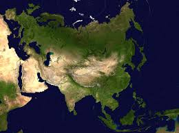

Евра́зия — крупнейший из шести материков на Земле. Площадь — 53,6 млн км², что составляет 36 % площади суши. Население — 5,349 млрд чел. (1 июл. 2019 г.), что составляет более 70 % населения планеты.
Рельеф Евразии чрезвычайно разнообразен, на нём находятся одни из самых больших равнин и горных систем мира, Восточно-Европейская равнина, Западно-Сибирская равнина, Тибетское нагорье. Евразия — самый высокий материк на Земле, его средняя высота — около 830 метров (средняя высота Антарктиды выше за счёт ледяного щита, но если её высотой считать высоту коренной породы, то континент будет самым низким). В Евразии находятся самые высокие горы на Земле — Гималаи (инд. Обитель снегов), а евразийские горные системы Гималаев, Тибета, Гиндукуша, Памира, Тянь-Шаня и др. образуют самую большую горную область на Земле.
Современный рельеф континента обусловлен интенсивными тектоническими движениями в периоды неогена и антропогена. Наибольшей подвижностью характеризуются Восточно-Азиатский и Альпийско-Гималайский геосинклинальные пояса. Мощными неотектоническими движениями характеризуется и широкая полоса разновозрастных структур от Гиссаро-Алая до Чукотки. Высокая сейсмичность присуща многим районам Средней, Центральной и Восточной Азии, Малайского архипелага. Действующие вулканы Евразии расположены на Камчатке, островах Восточной и Юго-Восточной Азии, в Исландии и в Средиземноморье.
Средняя высота континента — 830 м, горы и плоскогорья занимают около 65 % его территории.
В Евразии представлены все климатические пояса и климатические зоны. На севере преобладают арктический и субарктический климатические пояса, затем широкой полосой Евразию пересекает умеренный пояс, далее следует субтропический пояс. Тропический пояс на территории Евразии прерывается, растянувшись по континенту от Средиземного и Красного морей до Индии. Субэкваториальный пояс выступает на север, охватывая Индию и Индокитай, а также крайний юг Китая, а экваториальный пояс охватывает, в основном, острова юго-восточной Азии. Климатические зоны морского климата находятся преимущественно на западе континента в Европе, а также островах. Зоны муссонного климата преобладают в восточных и южных районах. С углублением вглубь суши растёт континентальность климата, особенно это заметно в умеренном поясе при движении с запада на восток. Зоны наиболее континентального климата находятся в Восточной Сибири.